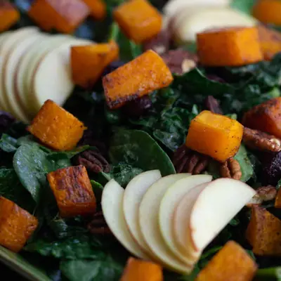

Fall Kale Salad with Butternut Squash

Ingredients
- 4 cups chopped kale
- 4 cups fresh spinach
- 1 medium butternut squash
- 1 tsp cinnamon
- 1/4 tsp pepper
- 1/2 tsp salt
- 2 Honeycrisp Apples (thinly sliced)
- 1/2 cup dried cranberries (sugar free)
- 1/4 cup pecans
- 3 tbsp vegetable broth
- 2 tbsp apple cider vinegar
- 1 tbsp pure maple syrup
- 2 tsp dijon mustard
- 1 tsp minced garlic
- 1/2 tsp thyme
Steps
- Preheat oven to 400 F. Chop butternut squash into one inch pieces.
- Evenly spread the squash on a sheet pan and sprinkle with salt and pepper. Place in preheated oven and roast for 25-30 minutes, flipping once.
- Wash, de-stem, and finely chop 1 bunch of kale while butternut squash is roasting.
- Whisk together vegetable broth, apple cider vinegar, dijon mustard, maple syrup, thyme, and pepper.
- Pour dressing over the kale. Massage the kale by squeezing and rubbing the kale for 2-5 minutes or until the kale darkens and softens. Add spinach and toss.
- Thinly slice apples.
- Place greens on the bottom of a serving tray or salad bowl. Top with roasted butternut squash, cranberries, apple slices, and walnuts. Serve immediately.
Recipe by Anjali Shah · The Picky Eater, from The Picky Eater. Saved here for personal use; the original has the full notes, tips and photos. Open original